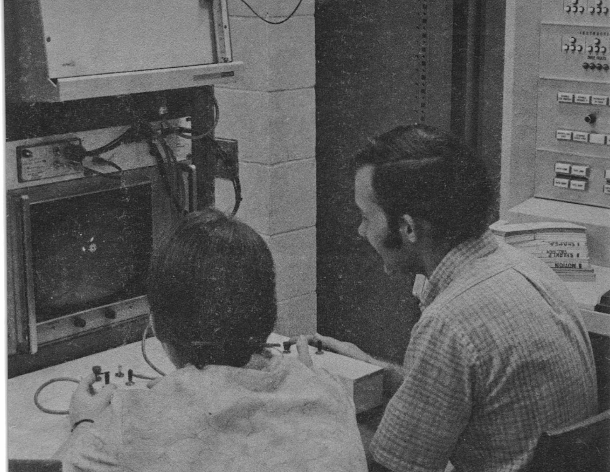
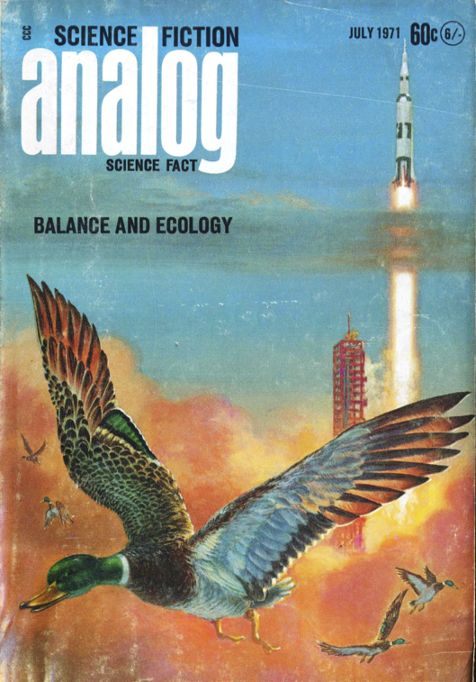
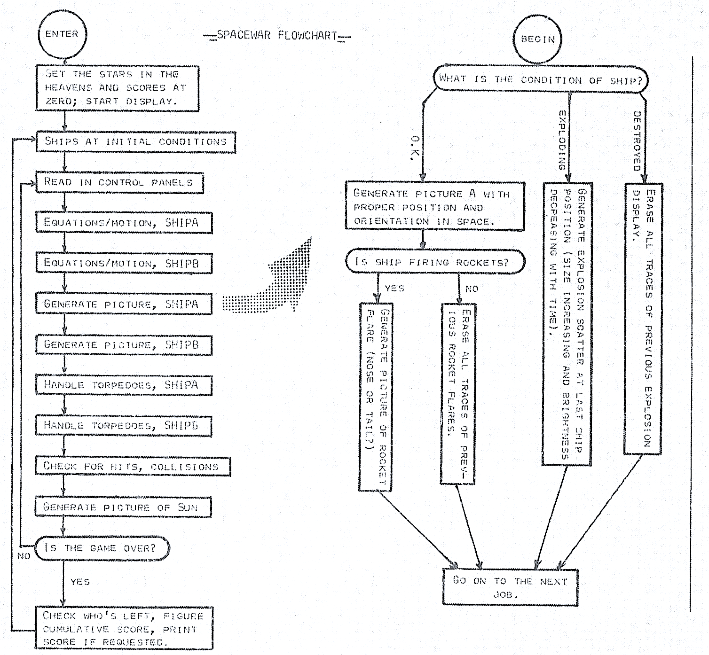
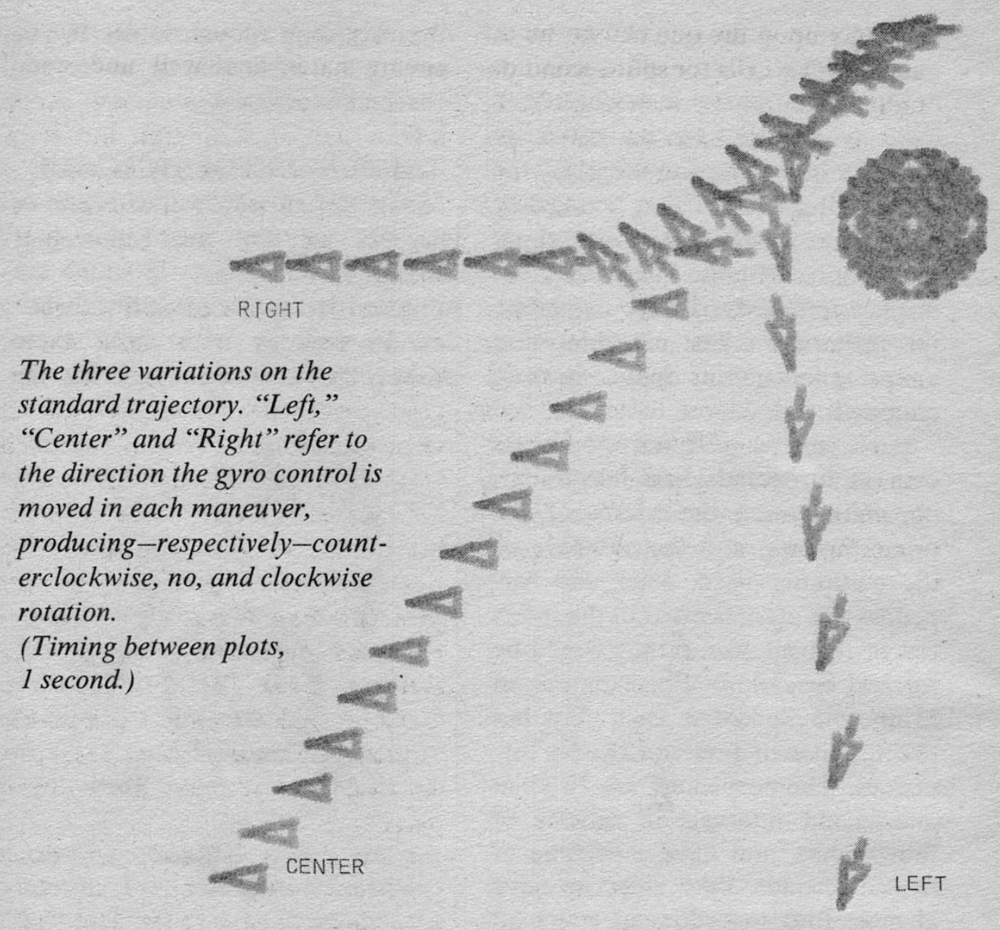
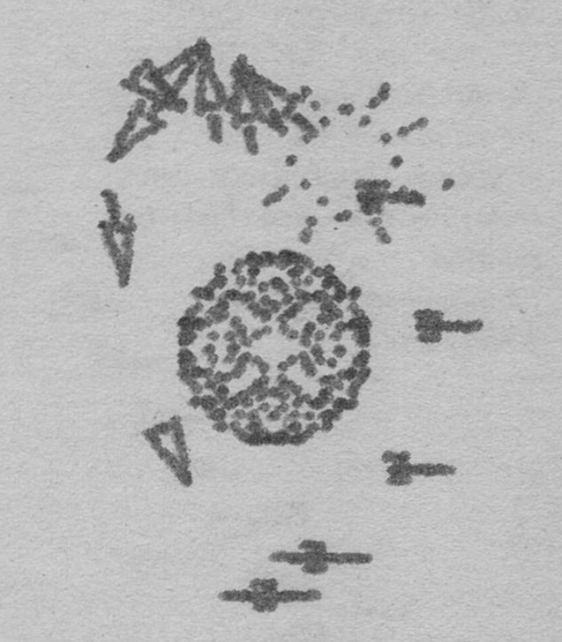

Spacewar at Minnesota: invisibility instead of luck
One thread of Spacewar!'s long journey runs to the University of Minnesota, where, on a CDC 3100 in a nuclear-physics laboratory, Albert W. Kuhfeld rebuilt the game from the idea rather than the code, and in doing so quietly redesigned it. His one change to hyperspace turned a game of luck into a game of skill, and his account of it carried Spacewar! out of the computer rooms and onto the newsstand.
Rebuilt from the idea

Invisibility, not hyperspace
The MIT game's hyperspace is an escape of last resort: press it and your ship jumps to a random point, at the risk of materialising inside the sun and being destroyed. It is pure luck. Kuhfeld replaced it with something better. The Minnesota Panic Button makes your ship invisible, but, as he put it, "your enemy can't see you, but neither can you yourself". You keep moving and steering blind, and your exhaust flame and any torpedo you fire give your position away. The escape now rewards nerve and dead reckoning rather than chance, "a panic button involving skill rather than luck".
"While programming Minnesota Spacewar, I opted for a panic button involving skill rather than luck. The Minnesota Panic Button makes your ship invisible. Your enemy can't see you, but neither can you yourself. The advantage lies with the player who is better at mentally predicting trajectories, which is made simpler because the rocket flames are not invisible: any course alterations will immediately pinpoint ship position." Kuhfeld, Analog, 1971 (p. 71).

"When a ship reaches the right edge of the CRT, it reappears at the left edge. When it goes out the top, it comes back in the bottom ... This is easy to program, for it is something digital computers will do automatically because of the way they handle positive and negative numbers. It's quite possible that the original programmers of Spacewar were as surprised by the effect as anybody is upon seeing the game for the first time, but if they were, they realized they had a good thing going and kept it. With the relatively small display terminals usually available, this little trick is the only thing that keeps the game from getting cramped." Kuhfeld on "toroidal space", Analog, 1971 (p. 72).
The game in a science-fiction magazine

"For nearly a dozen years I've been trying to get an article on the remarkable educational game invented at MIT. It's a great game, involving genuine skill in solving velocity and angular relation problems, but I'm afraid it will never be widely popular. The playing 'board' costs about a quarter of a mega-buck!" Albert W. Kuhfeld, Analog, July 1971.

The port as criticism

"I've done three versions of Spacewar so far, and each of them has been more elegant than the preceding version. Version I was a crude, get-it-working sort of thing that was fun to play, but really only served to define the programming problems. Version II was slightly faster and had a few more features. Version III has bells and whistles: it keeps score, which none of the earlier versions did, and the two ships are no longer identical, which helps in playing the game, but makes the programming harder. But I'm proudest of things that don't show, things buried deep in the programming. Version III is a bit faster than the earlier versions, even though it's more versatile." Kuhfeld, Analog, 1971 (p. 78).
"Although it uses a computer to handle orbital mechanics, physicists and mathematicians have no great playing advantage; John Campbell's seventeen-year-old daughter beat her MIT student-instructor on her third try and thereafter, while the most promising player I've seen was a theology student. Good reflexes and an eye for motion seem to be far more important than training in the concepts involved. And most perverse of all, the fun part of the game isn't really playing it, it's writing the program." Kuhfeld, Analog, 1971 (p. 78). John W. Campbell, the magazine's long-time editor, died on 11 July 1971, the very month this issue appeared.
"It was an education for all concerned"
Kuhfeld ends his article by looking back at what Spacewar! had been at MIT, and what became of it once the hard problems were solved. The arc, from a teaching machine that nobody planned to a recreation the faculty wanted shut down, is one this project keeps meeting.
"The first few years of Spacewar at MIT were the best. The game was in a rough state, students were working their hearts out improving it, and the faculty was nodding benignly and smiling as they watched the students learning computer theory faster and more painlessly than they'd ever seen before. It was an education for all concerned. The students were doing creative and difficult program design and debugging, and the only problems in sight were the few students who neglected their other studies to concentrate on Spacewar. After all, it looked so much like the things they came to school to study that it had to be good for them! And a background of real-time interactive programming was being built up that anybody in the school could draw upon; one of the largest problems in the development of the game was learning how to talk to a computer program, and have it answer back. Knowledge of this sort is useful whenever interaction with a computer is desirable, and many of the faculty were starting to put it to use." Kuhfeld, Analog, 1971 (p. 79).
"Eventually, after most things were implemented and working, the only real program development going on was done by a couple of students trying to introduce a computer-piloted flying saucer to occasionally zoom through the game as a kind of 'wild variable.' To the best of my knowledge, they never got it working. Students were still playing Spacewar, but with all the problems solved it was rapidly degenerating into pure recreation, and even gambling. Nobody was learning anything, except orbital dynamics, but they were taking up valuable computer time. The faculty became less benign; they wanted to use the computer. And Spacewar at MIT drifted off into the sunset." Kuhfeld, Analog, 1971 (p. 79).
References
- Albert W. Kuhfeld, "Spacewar", Analog Science Fiction / Science Fact, vol. LXXXVII, no. 5 (July 1971), pp. 67–79; reproduced and annotated at masswerk.at/spacewar/kuhfeld. The full issue is held in the luminist.org Analog / Astounding archive.
- Norbert Landsteiner, "Scientific Gaming: Minnesota Spacewar Reconstructed", for the CDC 3100, the dates, and the control boxes.
- The Kinephanos study "Space Odyssey: the long journey of Spacewar!" (2015), for the port census.